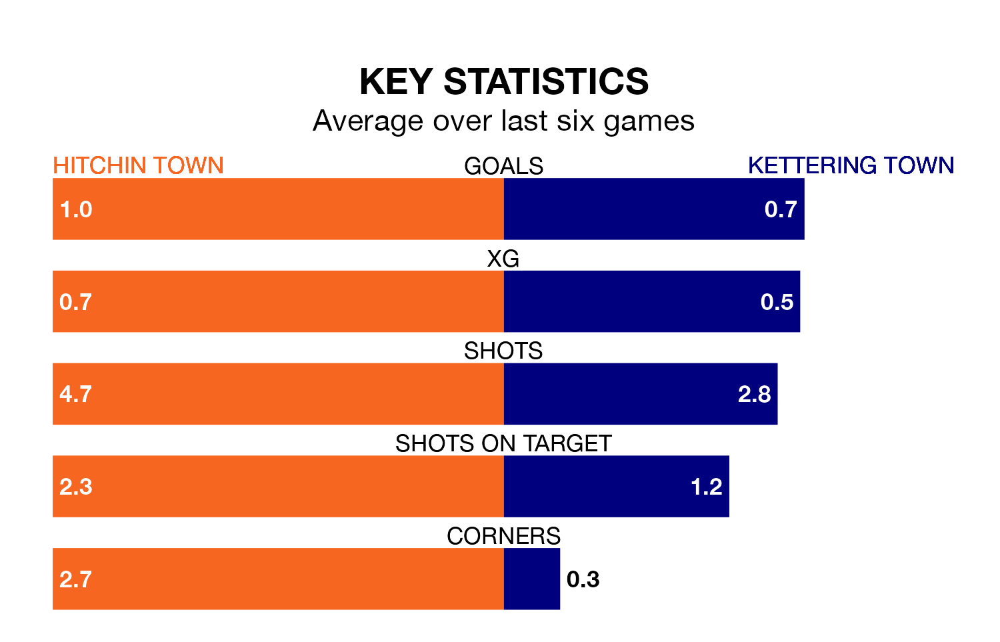

Hitchin Town and Kettering Town both come into Saturday's kick-off at Top Field in poor form, having picked up one and three points respectively in their last six games.
Hitchin have drawn just one of the last six, while the Poppies have taken just one win.
Kettering are 20th in the table after 24 games, of which they have won six and drawn five, earning 23 points.
Hitchin are 12 places ahead of Kettering Town in eighth, with 11 wins and five draws putting them on 38 points.
With 32 goals in 24 games so far this season, the Poppies are scoring at below the league average rate with 1.3 goals per game. And they are conceding more than average, letting in 52 goals at a rate of 2.2 per game.
Hitchin Town, meanwhile, are above average scorers, with 1.6 goals per game, compared to a league average of 1.5. They have conceded 1.5 goals per game.
In the last 10 years, Hitchin and Kettering have played each other on 10 occasions. Hitchin won two of them, Kettering four, and they drew four times.
On average, Hitchin scored 0.8 goals and the Poppies 1.3 in those matches.
Their last meeting was on September 30, when Kettering won 1-0 away.
Hitchin's last match was on January 20, a 2-1 loss against Alvechurch.
Kettering lost 2-1 against Stourbridge last time out, on January 13.
Updated: 09:07 (UTC), 24/01/24